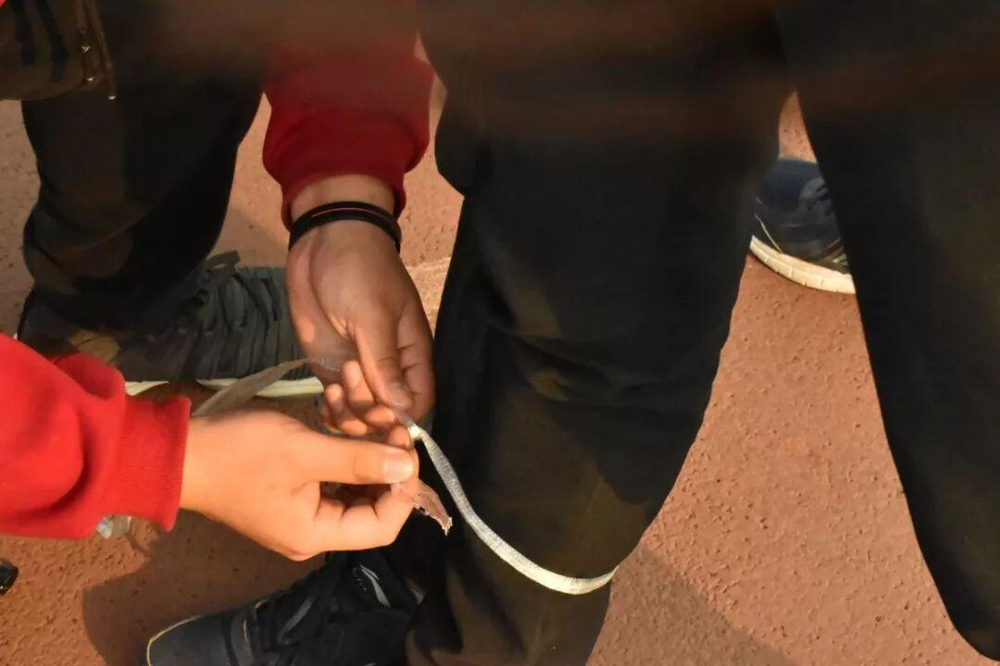
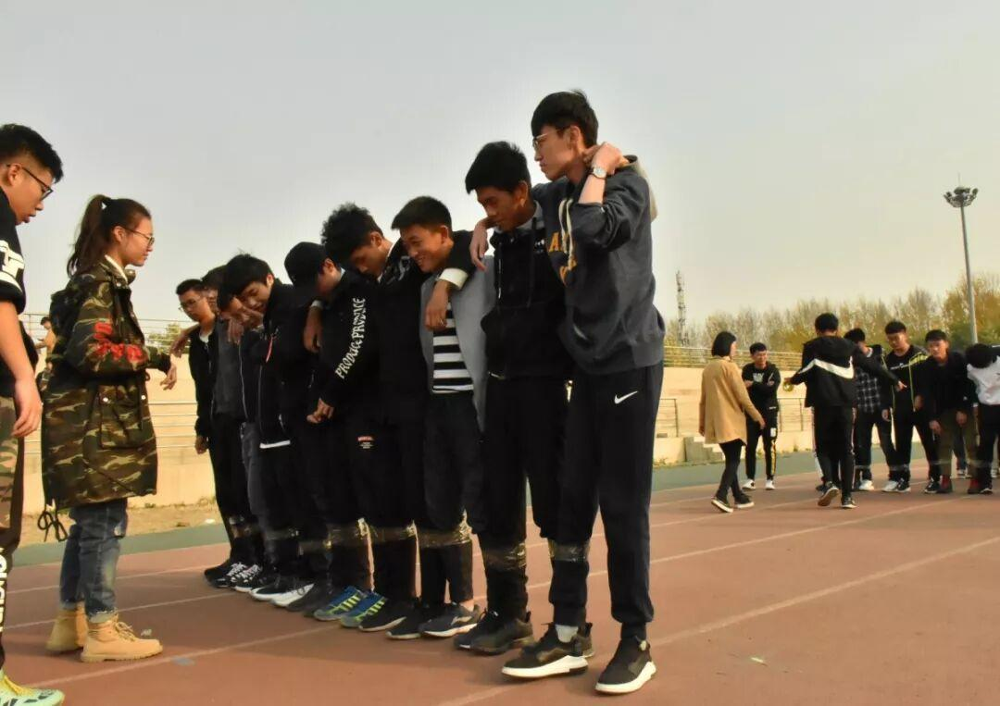
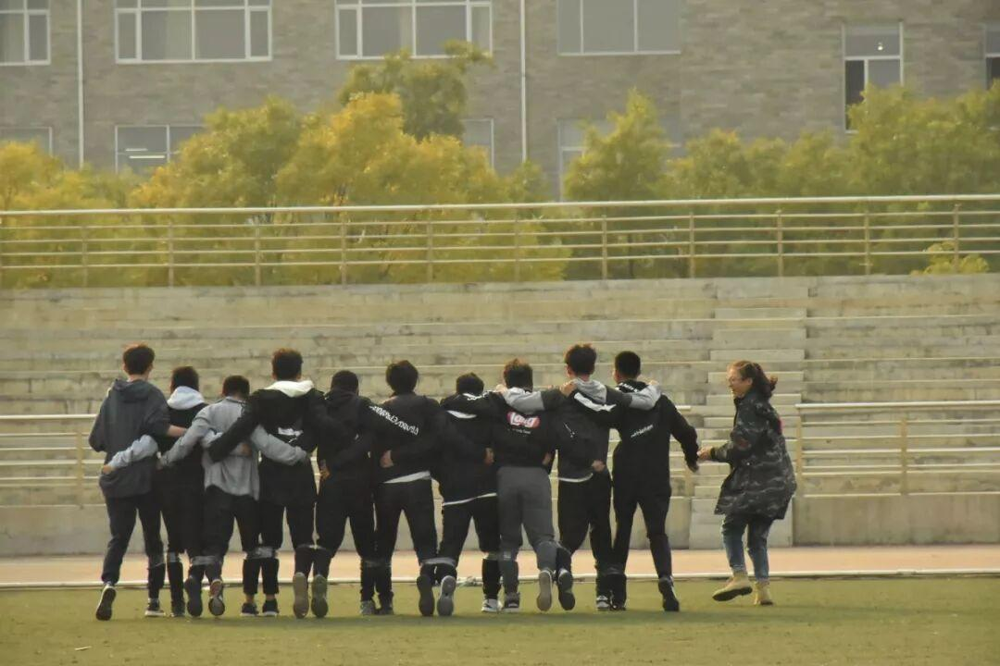
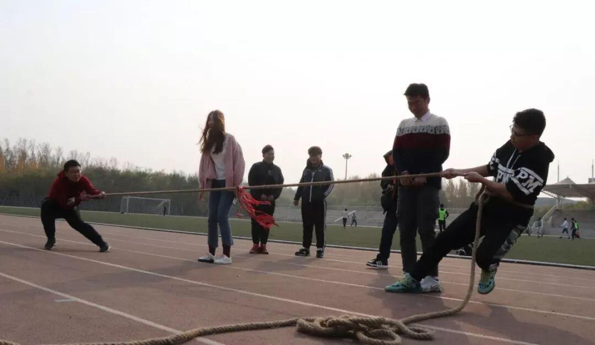
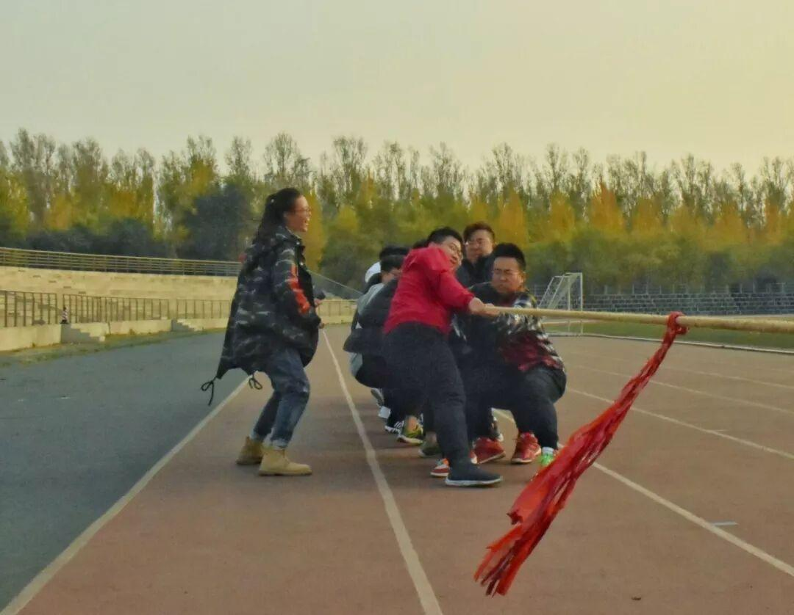
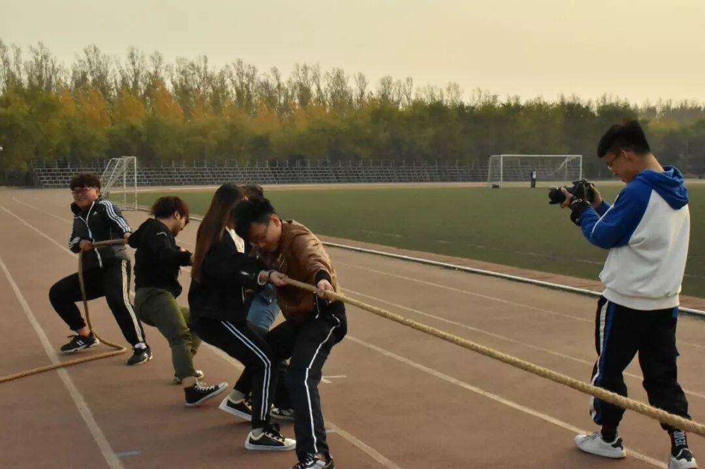
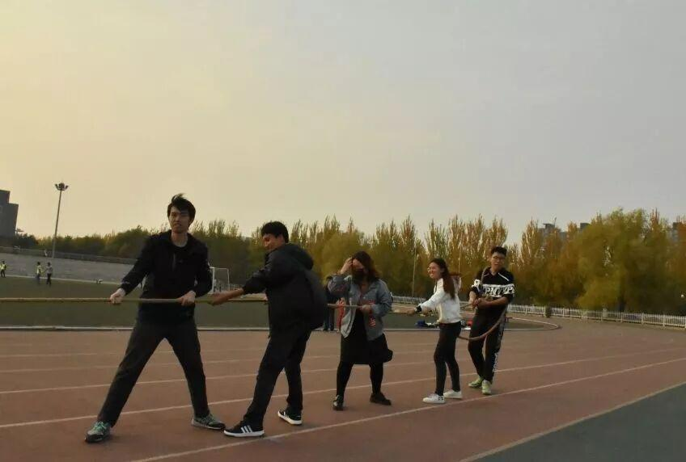
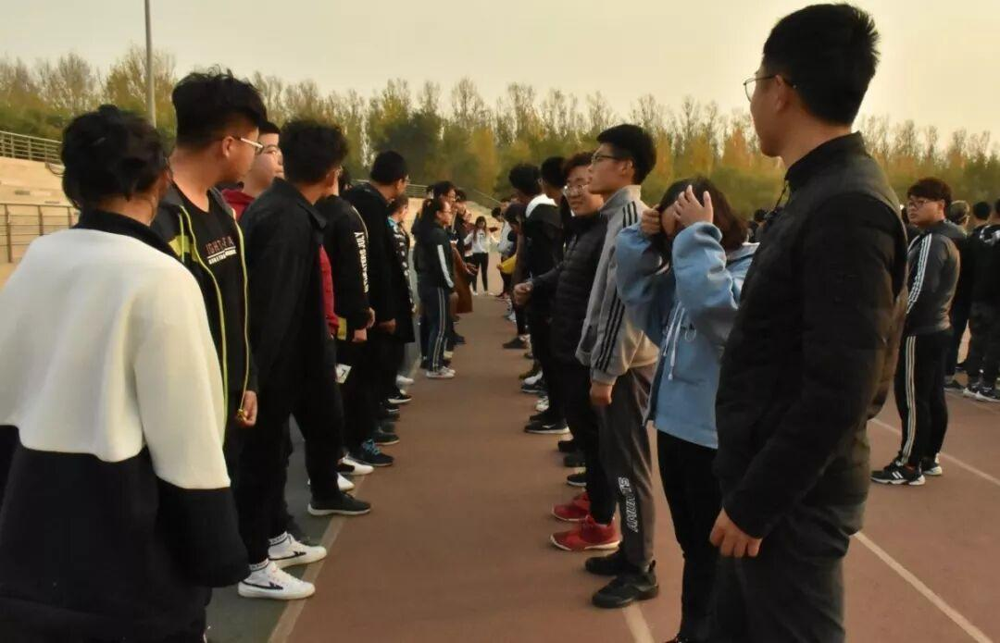
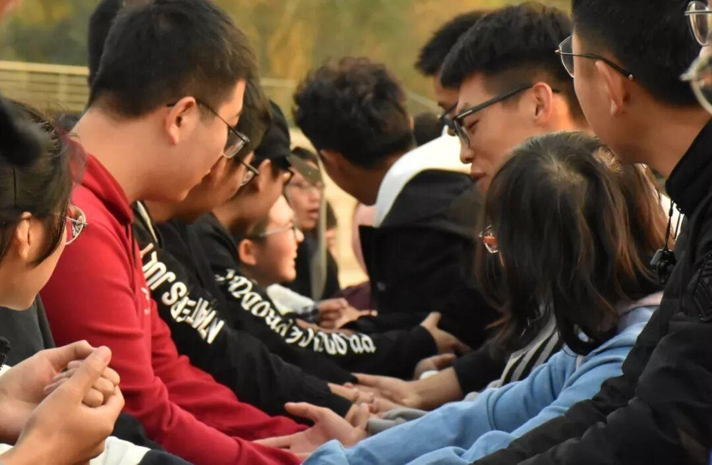
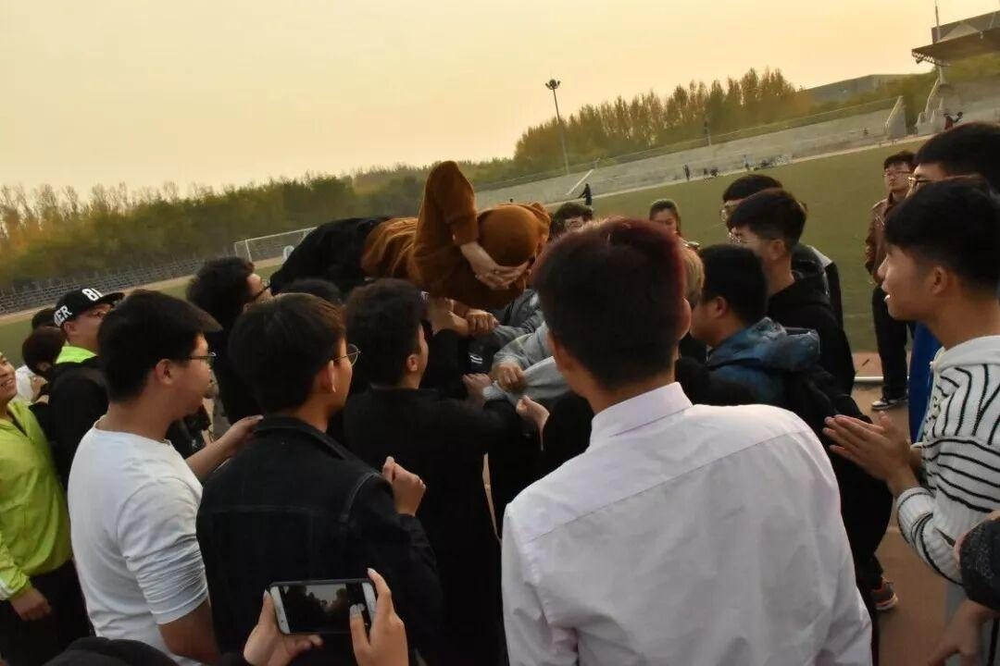

素质拓展
是的，新生见面会刚结束，我们马上又来搞事情了。这次活动有点不一样的是，除了我们社团还有其他五个社团一起参与。六个社团分别是：
琴韵文学社
电子技术与应用协会
紫枫剧社
粤语协会
律动能力拓展协会
创业者协会
六个社团聚在一起Happy的场面，实在是不多见，我们与琴韵一起作为光 宗 耀祖 队(是的你没看错) 的第四组，可以说是“实至名归” 。
。
现在，让我们一起看看这个下午我们一起愉快的经历了些什么：
第一个游戏：三人两足
这是考验大家协作&协调能力的游戏。在前面练习的时候大家的合作能力还是有待提高不堪入目的，没想到正式开始时，主持人话音刚落，我们的光宗耀祖队就飞奔出去了……

暖心的小哥哥在为参与游戏的人系带子


▲最后，为什么跑的这么和谐？腿上的胶带是摆设么？
第二个游戏：拔河
这个游戏不需要解释，除了考验体力和技巧，我们的体重也排上了用场！开玩笑，我们都是苗条的人，不过光宗耀祖队PK其他队伍，没什么好说的，实力碾压……


单挑热场▲ 碾压，就是这么优秀▲


学长学姐间的决斗
第三个游戏：传人
传人，顾名思义，传送的就是人，这是考验人与人之间信任的时候了，话不多说，请看图


然后变成这样▼
最后终于变成这样▼

游戏结束，笑声还在耳边回荡。欢乐的时间总是短暂，不知你们除了欢笑，是否还收获了其他更有意义的东西？
编辑：张诗梦
图片：张诗梦

微信公众号 战队微博